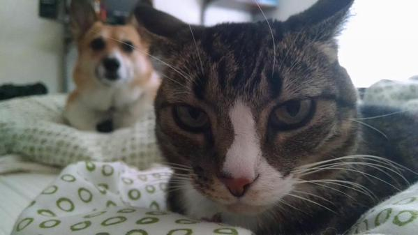

Thanks to the influence of a trendy website, a flame war, and those cute, long tongues. Get ready, you're going to be seeing a lot more of these adorable dogs you can't for the life of you justify from an evolutionary standpoint.
Everything gets a backlash these days. New HBO show Girls, great soccer teams, and remember Lana Del Rey? All critically acclaimed, and all dragged down by the nastiness of the Internet. Sure, that's not news by now, but could cats, the perennial mascot of the Web, be the latest victim? Well, based on a cursory reading of statistics law (I'm guessing regression to the mean), the Internet's fascination with cats was bound to wane at some point. Their popularity has been thoroughly analyzed, and everyone one hates a joke when you explain it. Plus, I guarantee that you or someone you love has said, at some point, "Enough with the cats already." It was just a matter of time before we realized that there were other cute animals out there, and that diversity is a good thing, especially when diversity snuggles with stuffed versions of itself.
It doesn't really matter at this point what Buzzfeed writes about—the story will rack up thousands and thousands of hits and "likes," going "viral," and "winning the Internet," sort of like how people think the government can control the weather. Perhaps Buzzfeed editor (and respected journalist) Ben Smith wanted to test the power of his Internet-control device, orchestrating a coup of the most entrenched Internet fad of them all that will turn into a battle of dogs vs. cats to rival Paradise Lost. OK, maybe corgis won't unseat cats, but they're going to do well, and more importantly, Buzzfeed is really starting to look like the New York Times of new media—even the New Yorker is a fan. Good for you, Buzzfeed! Tell us your digital-revenue secrets.
Buzzfeed's managing editor suggests that corgis are popular because "they're happy little doggy-dwarves who are always smiling. They're sort of demented and funny-looking in a way but then also really cute, and they don't care, they're always optimistic." But what if the secret to the corgi's success is not simply its cuteness, but something deeper, more essential than that? If the lazy, coy cat is the embodiment of our desire to look good while doing nothing, is not the corgi's blank, accepting expression and constant balance between complete relaxation and hypervigilance the physical manifestation of the phrase almost all of us ask with the completion of every tedious task: "What now?" Resting in those seemingly malformed hips is the attitude we put on as we walk out the door, our alienation from our labor, the very question of being. Corgis are the spirit animals of taking in stride, and we should thank Buzzfeed for teaching us more about ourselves. (N.B. It's easier to accept that the corgi represents the tragedy of modernity when you take into account that facts died on Wednesday.)